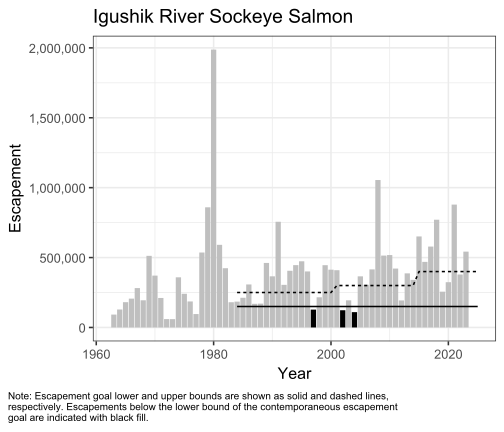
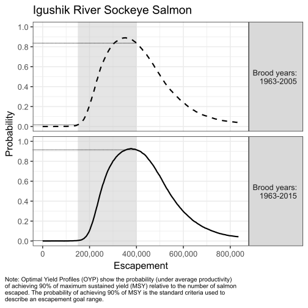
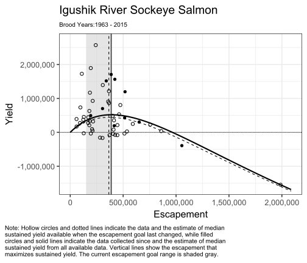
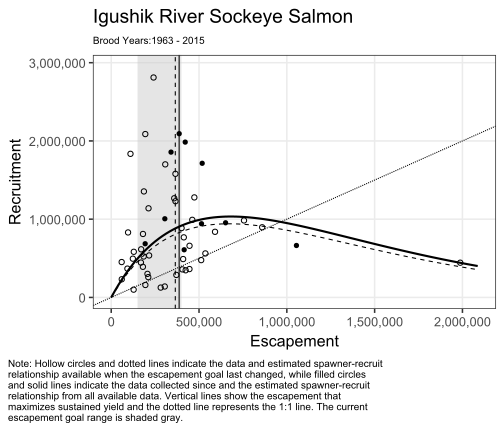
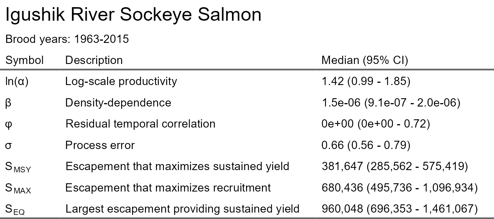

The R package EGprocess facilitates simple and standard creation of escapement goal data reporting.
You can install the development version of EGprocess from GitHub with:
# install.packages("pak")
pak::pak("ADFG-DSF/EGprocess")EGprocess provides a standardized set of R functions to be used by ADF&G staff during the escapement goal review process. This package is designed to help staff from both fisheries divisions and all regions produce consistent, high-quality figures and tables to be used as part of the Board of Fisheries (BOF) meetings. Salmon escapement goals in Alaska are reviewed every three years, aligned with the BOF’s regulatory meeting cycle. EGprocess supports this work by creating standardized outputs for spawner-recruit (SR) analyses, posterior summaries, expected yield curves, optimal yield profiles (OYP), and comparisons among updated and historical escapement goal findings. EGprocess can be used directly in R, or as a downstream companion to the Pacific Salmon SR Escapement Goal Analysis Shiny Application (“Hamachan Shiny App”), which produces the input data structures used by the package.
Standardizing figure structure, captions, and themes reduces the cognitive load on reviewers, allowing them to focus on interpretation instead of formatting differences across regions or divisions. EGprocess ensures:
- Consistent plot titles (Stock Name + Species Name).
- Standardized layout, theming, and color schema.
- Concise, reproducible figure notes that act as built-in legends.
- Reproducible workflows for future users and archiving.
Standardization does not prevent customization. Staff can treat EGprocess outputs as templates, modifying elements as needed for unique stock-specific situations. In more complex cases, users can build new plots from scratch using the tools provided by EGprocess.
EGprocess starts with MCMC output data created either by the Hamachan Shiny App, or during personalized spawner-recruit analyses using rJAGS. Specifically, the posterior data must contain nodes of lnalpha, beta, phi, and sigma.
There are repeated elements within EGprocess for ease of use. Common data inputs include:
- brood_data: Brood table created by function make_brood()
- goal_data: Current and historical escapement goals
- posterior_list: A named list containing MCMC samples for ln(alpha), beta, sigma, and related parameters
- profile_list: Data output from function get_profile()
While the typical escapement goal benchmark is 90% of MSY, it may be necessary to demonstrate other MSY levels. For example, the included dataset for Igushik River sockeye salmon shows a a near-zero probability of achieving 90% MSY at the lower bound of its existing goal and historical management reasoning for a suboptimal but stable yield.
In cases like this, EGprocess supports side-by-side evaluation of optimal and suboptimal yields. Users can specify a suboptimal target directly in the get_profile() function and generate profile plots that evaluate escapement goals relative to both targets.
Most frequently, researchers are tasked with updating an existing escapement goal with additional returns. In such cases, it is helpful to compare data since the previous assessment to the updated dataset. EGprocess facilitates simple comparison between such datasets so that researchers can assess the validity of the goal in light of additional data.
Function get_profile() generates optimal yield profiles (OYP) from posterior MCMC samples.
Igushik_posterior <- c(post_Igushik_byr63_05, post_Igushik_byr63_15)
Igushik_profile <- get_profile(Igushik_posterior, multiplier = 1e-5)Function get_age() combines or censures extreme ages from run data age-composition proportions. This function has utility if extreme ages were combined or censored by the Shiny app during escapement goal analysis and can be ignored if age composition proportions were not modified during escapement goal analysis. The function recreates the run_data input provided after modifying the age composition by censoring or combining extreme ages.
head(data_Igushik)
#> yr S N A3 A4 A5 A6 A7 A8
#> 1 1963 92184 136351 0 75779 51359 9213 0 0
#> 2 1964 128532 191054 0 41912 135654 13488 0 0
#> 3 1965 180840 297253 0 28452 252608 16194 0 0
#> 4 1966 206360 310078 0 17671 262777 29630 0 0
#> 5 1967 281772 412374 105 196850 205905 9514 0 0
#> 6 1968 194508 290686 299 125081 159764 5541 0 0
age_demo <- get_age(run_data = data_Igushik, min_age = 4, max_age = 6, combine = TRUE)
head(age_demo)
#> yr S N A4 A5 A6
#> X1 1963 92184 136351 0.55576417 0.3766676 0.06756826
#> X2 1964 128532 191054 0.21937253 0.7100296 0.07059784
#> X3 1965 180840 297253 0.09571612 0.8498052 0.05447866
#> X4 1966 206360 310078 0.05698889 0.8474545 0.09555660
#> X5 1967 281772 412374 0.47761256 0.4993162 0.02307129
#> X6 1968 194508 290686 0.43132601 0.5496121 0.01906187Function get_brood() builds the brood table by combining escapement, recruitment, and age-composition information.
brood_Igushik <- get_brood(run_data = data_Igushik)
tail(brood_Igushik, n = 10)
#> yr S b.Age3 b.Age4 b.Age5 b.Age6 b.Age7 b.Age8 R
#> 60 2014 340590 1766 734904 1120532 2 0 0 1857204
#> 61 2015 651172 0 233250 655310 65390 0 0 953950
#> 62 2016 469230 851 555165 943585 10867 0 NA NA
#> 63 2017 578700 2073 1014244 2310253 29350 NA NA NA
#> 64 2018 770772 0 664431 1046811 NA NA NA NA
#> 65 2019 256074 668 303697 NA NA NA NA NA
#> 66 2020 323814 0 NA NA NA NA NA NA
#> 67 2021 878952 NA NA NA NA NA NA NA
#> 68 2022 378768 NA NA NA NA NA NA NA
#> 69 2023 542496 NA NA NA NA NA NA NAFunction plot_escapement() creates a plot of the historical escapements, overlaid with the escapement goal history.
plot_escapement(brood_data = brood_Igushik, goal_data = goal_Igushik,
title = "Igushik River Sockeye Salmon")
Function plot_profile() generates a standardized OYP plot.
plot_profile(profile_list = Igushik_profile, goal_data = goal_Igushik,
title = "Igushik River Sockeye Salmon")
#> Warning: Removed 4 rows containing missing values or values outside the scale range
#> (`geom_segment()`).
Function plot_ey() produces a plot of realized yields and median expected yield, both overlain with the goal range.
plot_ey(posterior_list = Igushik_posterior, brood_data = brood_Igushik,
goal_data = goal_Igushik, title = "Igushik River Sockeye Salmon",
multiplier = 1e-5)
Function plot_SR() produces plot of realized recruitment and the median spawner-recruit relationship, both overlain with the goal range.
plot_SR(posterior_list = Igushik_posterior, brood_data = brood_Igushik,
goal_data = goal_Igushik, title = "Igushik River Sockeye Salmon",
multiplier = 1e-5)
Function table_SR() creates a table of SR parameters with confidence intervals.
table_SR(posterior_list = Igushik_posterior[2], title = "Igushik River Sockeye Salmon",
multiplier = 1e-5)
Function output_SR() is the final function in the workflow. It creates a list containing all the escapement goal figures and tables. Output is not shown here because it contains all previous examples.
output_SR(posterior_list = Igushik_posterior, brood_data = brood_Igushik,
goal_data = goal_Igushik, title = "Igushik River Sockeye Salmon",
multiplier = 1e-5)To help users and produce useful examples, EGprocess includes 4 example datasets from the Igushik River sockeye salmon escapement goal analyses. Dataset goal_Igushik provides the historical escapement goal bounds used across management periods, while datasetdata_Igushik contains annual escapement, total run, and age‑composition information used to build brood tables. Two posterior datasets, post_Igushik_byr63_05 and post_Igushik_byr63_15, contain MCMC samples of model parameters for brood years 1963–2005 and 1963–2015, respectively. More information about the included datasets are found in the supporting data docs and in the included vignette EGprocess Orientation. Test link vignette("EGprocess-Orientation").